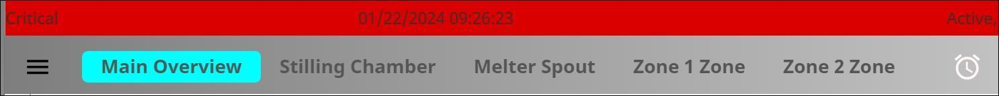
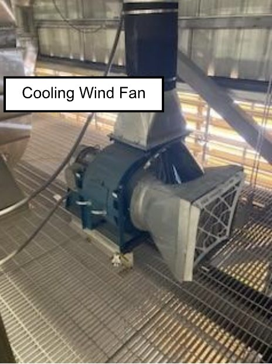

Cooling wind failure
See the following to diagnose and respond to a cooling wind failure.
-
Know the symptoms and causes.
Common symptoms of cooling wind failure:
- Cooling wind fan error message at the operator station.
- High radar gauge temperature alarm.
Cooling wind can be lost for several reasons:
- Blower wheel obstruction
- Clogged filter
- Bearing failure
- Motor failure
-
At the operator station:
- Check for any alarms.
- Alarms are shown at the top of the screen.

-
Physically check the cooling wind fan.
- Check if the filter is clogged.
- Check if the fan is running as expected by looking through the perforated guard at the shaft.
- Check the wiring and duct connections.
If you hear squealing or screeching noises:
- There may be a motor or bearing issue.

-
Check the wiring and duct connections.
- If the cooling wind fan is running but the radar gauges still report high temperatures, physically inspect the cooling wind ducts.
- Check each duct and connection.